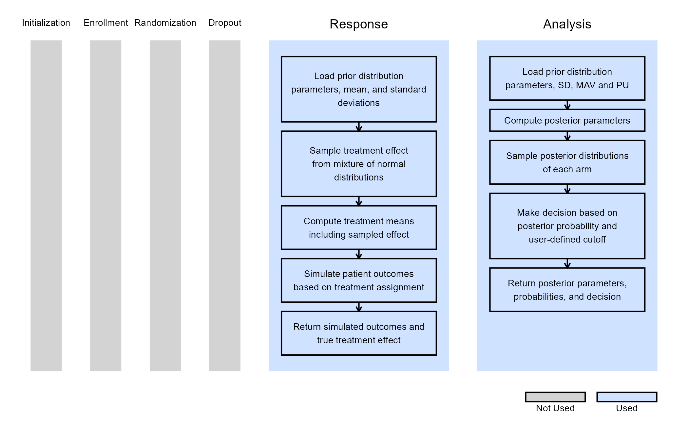
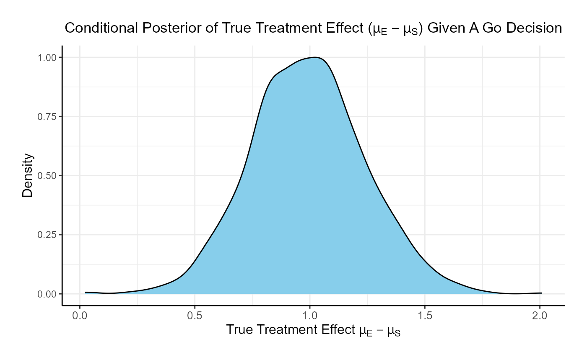

Bayesian Assurance, Continuous Outcome
J. Kyle Wathen and Laurent Spiess
October 31, 2025
BayesianAssuranceContinuous.RmdThis example is related to both the Integration Point: Response - Continuous Outcome and the Integration Point: Analysis - Continuous Outcome. Click the links for setup instructions, variable details, and additional information about the integration points.
- Study objective: Two Arm Confirmatory
- Number of endpoints: Single Endpoint
- Endpoint type: Continuous Outcome
- Task: Explore
Note: This example is compatible with both Fixed Sample and Group Sequential statistical designs. The R code automatically detects whether interim look information (LookInfo) is available and adjusts the analysis parameters accordingly.
Introduction
The intent of the following examples is to demonstrate the computation of Bayesian assurance, or probability of success, through the integration of R with Cytel products. The examples feature a two-arm trial with normally distributed outcomes, using a mixture of normal distributions prior to compute assurance.
The scenarios covered are as follows:
- Fixed sample design using a mixture of normal distributions to compute Bayesian assurance.
- Group sequential design, expanding on Example 1, with an interim analysis for futility based on Bayesian predictive probability.
Once CyneRgy is installed, you can load this example in RStudio with the following commands:
CyneRgy::RunExample( "BayesianAssuranceContinuous" )Running the command above will load the RStudio project in RStudio.
In the R directory of this example you will find the R files used in the examples:
- SimulatePatientOutcomeNormalAssurance.R - Functions to simulate patient outcomes under a normal distribution informed by mixture priors.
- AnalyzeUsingBayesianNormals.R - Implements Bayesian analysis of simulated outcomes using normal priors.
Example 1 - Fixed Sample Design
This example considers a two-arm fixed sample design with normally distributed outcomes , with 80 patients per treatment arm. It demonstrates how to customize the Response (Patient Simulation) element of East Horizon’s simulation to simulate a mixture of normal distributions, and the Analysis element of East Horizon’s simulation to compute the probability of success.
By integrating an R function into the Analysis integration point, users can evaluate the frequentist operating characteristics of the Bayesian design in East Horizon. Additionally, by modifying the Response integration point, the simulation will incorporate Bayesian assurance. Specifically, an R function first samples from the assurance prior, then generates the patient data. The resulting power from this simulation reflects the Bayesian assurance, assuming the two-component prior.
Often, it is important to examine the posterior distributions of both the observed and true treatment differences following a Go decision. These posterior distributions provide valuable insights for planning subsequent study phases and assessing potential risks. The process of obtaining these posterior distributions is detailed in the next example.
The figure below illustrates where this example fits within the R integration points of Cytel products, accompanied by flowcharts outlining the general steps performed by the R code.

Response (Patient Simulation) Integration Point
This endpoint is related to this R file: SimulatePatientOutcomeNormalAssurance.R
This function simulates patient-level outcomes within a Bayesian assurance framework, using a two-component mixture prior to reflect uncertainty about the true treatment effect. It allows for assessing the probability of trial success (assurance) under uncertainty about the true treatment effect. Information generated from this simulation will be used later for the Analysis Integration Point.
In this example, the true treatment effect () is sampled from a mixture of two normal priors:
- 25% weight on .
- 75% weight on .
The control mean is fixed, while the experimental mean is computed as . Each patient’s response is then simulated from a normal distribution corresponding to their assigned treatment group, with standard deviations defined separately for each arm.

Refer to the table below for the definitions and values of the user-defined parameters used in this example.
| User parameter | Definition | Value |
|---|---|---|
| dWeight1 | Weight of prior component 1. | 0.25 |
| dWeight2 | Weight of prior component 2. | 0.75 |
| dMean1 | Mean of prior component 1. | 0 |
| dMean2 | Mean of prior component 2. | 0.7 |
| dSD1 | Standard deviation of prior component 1. | 0.05 |
| dSD2 | Standard deviation of prior component 2. | 0.3 |
| dMeanCtrl | Mean of control arm (experimental arm will be sampled). | 0 |
| dSDCtrl | Standard deviation for control arm. | 1.9 |
| dSDExp | Standard deviation for experimental arm. | 1.9 |
Analysis Integration Point
This endpoint is related to this R file: AnalyzeUsingBayesianNormals.R
This function evaluates the posterior probability that the experimental treatment arm is better than the control arm by more than a clinically meaningful threshold, and returns a Go/No-Go decision based on a cutoff (). It uses information from the simulation that is generated by the Response element of East Horizon’s simulation, explained above.
For patients receiving treatment (S = standard/control, E = experimental), we assume the outcomes , where is an unknown mean and is a known, fixed variance.
We assume a priori that:
After observing patients on treatment , the posterior distribution of becomes:
where:
At the conclusion of the study, the posterior probability that the experimental arm exceeds the control arm by more than the minimum acceptable value (MAV) is calculated as:
The decision rule is as follows:
- If Go.
- If No-Go.
Refer to the table below for the definitions and values of the user-defined parameters used in this example.
| User parameter | Definition | Value |
|---|---|---|
| dPriorMeanCtrl | Prior mean for control arm. | 0 |
| dPriorStdDevCtrl | Prior standard deviation for control arm. | 1000 |
| dPriorMeanExp | Prior mean for experimental arm. | 0 |
| dPriorStdDevExp | Prior standard deviation for experimental arm. | 1000 |
| dSigma | Known sampling standard deviation. | 1.9 |
| dMAV | Minimum Acceptable Value (clinically meaningful difference). | 0.8 |
| dPU | Go threshold (posterior probability cutoff). | 0.8 |
| dPUFutility | Threshold probability of futility stopping. If the predictive probability of a No Go decision at the end exceeds this value, the trial is stopped early for futility. | 0.8 |

Example 2 - Group Sequential Design
This example follows the same structure and uses the same code as Example 1. However, it introduces an interim analysis (IA) for futility assessment when outcomes are observed for 50% of the enrolled patients. The futility decision is based on the Bayesian predictive probability of a No-Go decision at the end of the trial. Specifically, if the predictive probability suggests that a No-Go is likely at the final analysis, the trial is stopped early for futility. If not, the trial continues to the final analysis (FA), which uses the same R code. The in Analysis element of East Horizon’s simulation is thus customized to handle this case as explained below.
The figure below illustrates where this example fits within the R integration points of Cytel products, accompanied by flowcharts outlining the general steps performed by the R code.

Response (Patient Simulation) Integration Point
This endpoint is related to this R file: SimulatePatientOutcomeNormalAssurance.R
The function for the Response Integration Point is the same as in Example 1. Refer to the table below for the definitions and values of the user-defined parameters used in this example.
| User parameter | Definition | Value |
|---|---|---|
| dWeight1 | Weight of prior component 1. | 0.25 |
| dWeight2 | Weight of prior component 2. | 0.75 |
| dMean1 | Mean of prior component 1. | 0 |
| dMean2 | Mean of prior component 2. | 0.7 |
| dSD1 | Standard deviation of prior component 1. | 0.05 |
| dSD2 | Standard deviation of prior component 2. | 0.3 |
| dMeanCtrl | Mean of control arm (experimental arm will be sampled). | 0 |
| dSDCtrl | Standard deviation for control arm. | 1.9 |
| dSDExp | Standard deviation for experimental arm. | 1.9 |
Analysis Integration Point
This endpoint is related to this R file: AnalyzeUsingBayesianNormals.R
The function for the Analysis Integration Point is the same as in Example 1, with the addition of the dPUFutility variable to incorporate the interim analysis. dPUFutility is a user-defined threshold that specifies the minimum predictive probability of a No-Go decision required to stop the trial early for futility at the interim analysis.
Let represent the data available at the interim analysis and the data for patients enrolled thereafter. If the predictive probability of a No-Go decision at the end of the study, given , exceeds a pre-specified threshold , the trial is stopped. Formally, the stopping rule is:
This can be expressed as:
Refer to the table below for the definitions and values of the user-defined parameters used in this example.
| User parameter | Definition | Value |
|---|---|---|
| dPriorMeanCtrl | Prior mean for control arm. | 0 |
| dPriorStdDevCtrl | Prior standard deviation for control arm. | 1000 |
| dPriorMeanExp | Prior mean for experimental arm. | 0 |
| dPriorStdDevExp | Prior standard deviation for experimental arm. | 1000 |
| dSigma | Known sampling standard deviation. | 1.9 |
| dMAV | Minimum Acceptable Value (clinically meaningful difference). | 0.8 |
| dPU | Go threshold (posterior probability cutoff). | 0.8 |
| dPUFutility | Threshold to stop the trial early for futility. | 0.9 |
Results
The results of the design are as follows:
- The probability of an end of study Go is: 0.1478
- The probability of an end of study No-Go (Stop) is: 0.2656
- The probability of futility at the interim: 0.5866
- The probability of a Go conditional on not stopping at the interim: 0.357523
- The probability of a No-Go conditional on not stopping at the interim: 0.642477
The posterior mean of the true delta, , given a Go decision is: 0.992
The summary of the true delta given a Go decision is:
## Min. 1st Qu. Median Mean 3rd Qu. Max.
## 0.023 0.823 0.990 0.992 1.151 2.009The scaled posterior distribution of the true delta given a Go decision is:
